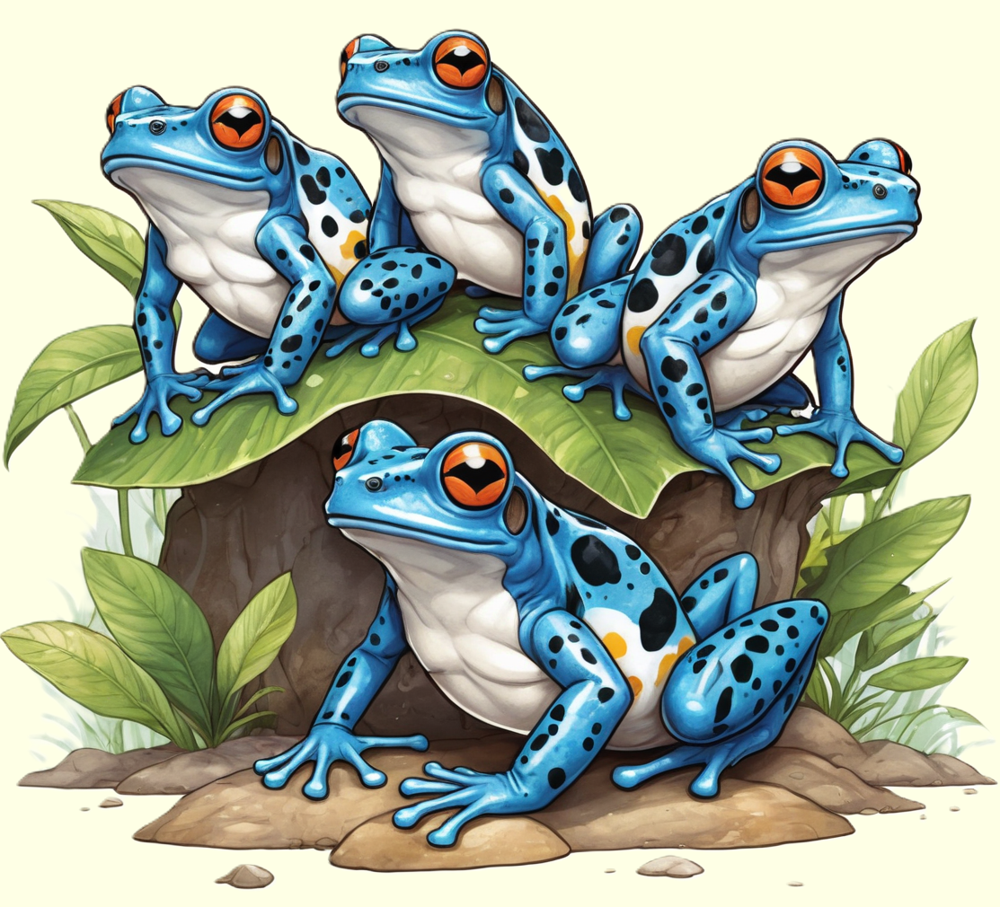

Der Pfeilgiftfrosch, ein farbenfrohes Amphibium, bezaubert mit seinen lebendigen Farben und seiner winzigen Größe.
Erforsche die aufregende Welt dieser kleinen Giftträger und entdecke, wie sie in den Regenwäldern Mittel- und Südamerikas leben.

Auffällige Farben, Gefährliche Gifte
Die Pfeilgiftfrösche, auch als Giftfrösche bekannt, sind kleine, farbenfrohe Amphibien, die hauptsächlich in den tropischen Regenwäldern Mittel- und Südamerikas beheimatet sind. Diese Winzlinge fallen besonders durch ihre lebhaften Farben auf, die von leuchtendem Blau, Grün, Gelb bis zu lebhaftem Rot reichen können. Obwohl sie visuell beeindruckend sind, tragen diese Farben eine ernsthafte Warnung: Pfeilgiftfrösche sind für ihre hochgiftigen Hautsekrete bekannt. Diese Gifte dienen als Schutzmechanismus, der die Frösche vor Raubtieren schützt. In Gefangenschaft, wenn diese Frösche nicht mehr ihre natürliche Nahrung zu sich nehmen, verlieren sie jedoch ihre Giftigkeit.
Die Gifte der Pfeilgiftfrösche werden von einigen indigenen Völkern für die Herstellung von Blasrohrgiften verwendet, die zur Jagd eingesetzt werden. Diese Frösche ernähren sich von kleinen Insekten und anderen wirbellose Tiere und haben oft eine aktive Lebensweise. Trotz ihrer geringen Größe sind Pfeilgiftfrösche territorial und können in ihren natürlichen Lebensräumen verschiedene Laute zur Kommunikation erzeugen.
Anpassung an Vielfältige Lebensräume
Pfeilgiftfrösche bewohnen verschiedene Lebensräume, darunter Regenwälder, trockene Wälder und feuchte Gebirgsregionen. Sie sind oft in der Nähe von Gewässern wie Flüssen und Bächen zu finden, wo sie ihre Eier ablegen. Die Fortpflanzung bei diesen Fröschen ist interessant, da die Männchen sich aktiv an der Pflege der Eier und Kaulquappen beteiligen. Nachdem die Eier geschlüpft sind, tragen die Männchen die Kaulquappen auf ihrem Rücken zu Wasseransammlungen, wo sie sich weiterentwickeln.
Die Hauptbedrohung für Pfeilgiftfrösche ist der Verlust ihres Lebensraums durch Abholzung und Landnutzungsänderungen. Die Zerstörung von Regenwäldern führt zu einem Rückgang ihrer Populationen, da sie spezialisierte Lebensräume benötigen. Einige Arten sind aufgrund ihrer begrenzten Verbreitungsgebiete bereits gefährdet. Der Erhalt dieser faszinierenden Amphibien erfordert den Schutz ihrer natürlichen Lebensräume und nachhaltige Maßnahmen zur Bewahrung der Biodiversität in den Ökosystemen, in denen sie vorkommen.